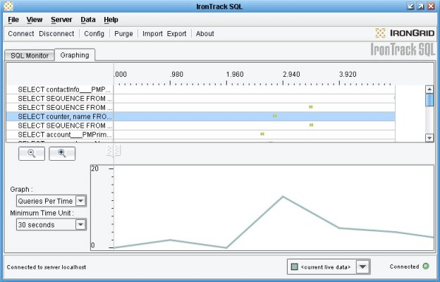
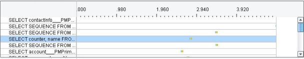
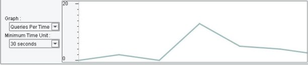

Using the Graphing Section
From the Graphing section of IronTrack SQL, you can view the results of the SQL statements in your application over time and determine when performance spikes occur. You can compare query performance and activity between multiple data sets. You can search for performance problems that result from query interactions (for example, two queries executing at a particular moment in time).
From this document, you can access the following information:
Interface Elements of the Graphing Section
The Graphing section of IronTrack SQL includes an intuitive interface to help you manage and monitor the SQL statements generated by your application. The interface enables you to view information in multiple ways. The following image illustrates the main elements of the Graphing section:

The SQL Statement and Timeline Areas
The SQL statement and timeline areas display in the top half of the screen. The left-hand side displays the statements your application executes. The area to the right of the SQL statements displays a timeline indicating the duration of each statement execution and the colored indicators that represent the preparation, execution and retrieval time of the statements.

Note: You can double-click on an SQL statement to take you to the SQL statement table of the SQL Monitor section, where you can sort the list of SQL statements. When you return to the Graphing section IronTrack SQL retains the sort order you defined in the SQL Monitor section.
Controls for Zooming In and Out
The Graphing section includes controls for zooming in and out of the view. Zooming in helps you get a closer look at specific segments of time to see a more detailed view of the SQL results. Zooming out helps you get a wider perspective on the overall performance of your dataset.
Zooming controls include the following graphical elements:
- Zoom Out Button — Zooms out from the center point of the current view, providing a view of ten times the area of the previous view.
- Zoom In Button — In combination with the left and right sliders, zooms to a narrower view of the SQL statement execution timeline.
- Left Slider — Specifies the beginning time at which to zoom.
- Right Slider — Specifies the ending time at which to zoom.
Zooming In on the Timeline
To zoom in on the SQL statement execution timeline
- With your mouse, click and hold the right slider and move it to the time at which to end the zoom operation.
- Move the left slider to the time at which to begin the zoom operation.
- Click the Zoom In button to complete the zoom operation.
IronTrack SQL displays the slice of the timeline specified by the left and right sliders.
Zooming Out of the Timeline
Each time you click on the Zoom Out button the view broadens by a factor of ten from the center of the current view.
The Graph Area
The graph area displays at the bottom of the screen. The left-hand side of the graph area displays drop-down menus for setting what metric to graph and the minimum unit of time to display. The area to the right of the drop-down menus displays the performance graph of the SQL statements being executed.

Drop-Down Menus in the Graph Area
The graph area includes the following drop-down menus:
- Graph — Provides the following options:
- Default Time Unit — Provides the following options:
- 10 ms — Sets the major increments in the timeline to 10 milliseconds.
- 100 ms — Sets the major increments in the timeline to 100 milliseconds.
- 1 second — Sets the major increments in the timeline to 1 second.
- 30 seconds — Sets the major increments in the timeline to 30 seconds.
- 1 minute — Sets the major increments in the timeline to 1 minute.
- 5 minutes — Sets the major increments in the timeline to 5 minutes.
- 10 minutes — Sets the major increments in the timeline to 10 minutes.
- 30 minutes — Sets the major increments in the timeline to 30 minutes.
- 1 hour — Sets the major increments in the timeline to 1 hour.
Managing Datasets
Using IronTrack SQL you can execute a series of SQL statements to create a snapshot of your SQL over a specified period of time — a dataset — and export it to a file. Then you can change your SQL to improve its performance. You can export as many data sets as you need. You can later import the exported datasets and compare them to determine where each dataset is performing well and where they are not.
Note: To accurately compare the SQL performance of the statements in your datasets, it is important that each dataset to compare initializes its SQL statements at the same time.
Creating a Dataset
You can create datasets in the following two ways:
- Creating a Static Dataset — Use this method, when your SQL statements run in a short amount of time or when you will be able to keep the IronTrack SQL user interface running until your SQL statements run to completion.
- Creating a Dataset Using Streaming Export — Use this method, when your SQL statements run over a long period of time or when you will need to disconnect the IronTrack SQL user interface from the application server.
Note: The export operation ignores any filtering you have performed and save the entire dataset.
Creating a Static Dataset
You can create a static dataset, when your SQL statements run to completion in a short amount of time, and you want to capture the performance of those statements after they have completed execution.
To create a static dataset
- Run the commands in the application that execute the SQL statements to monitor.
- After the SQL statements have completed, export the dataset. For information on how to export a dataset, see Exporting Datasets in Using the Monitoring Section.
Creating a Dataset Using Streaming Export
You can create a dataset using streaming export, when your SQL statements run over a long period of time and you need to stream the results into a file on the application server over time.
To create a dataset using streaming export
- Run the commands in the application that execute the SQL statements to monitor.
- Select Server -> Streaming Export to display the Server Export Dataset dialog.
- In the Dataset version field, enter a unique string that identifies the dataset.
- In the Base File Name field, enter the file name to which this dataset will be saved.
Note: The dataset is saved in XML format in the same directory as the spy.log file.
Stopping Streaming Export
To stop a streaming export
- Start the IronTrack SQL user interface.
- Select Server -> Streaming Export.
IronTrack SQL stops exporting the dataset and closes the XML file into which the dataset is being exported.
Comparing Datasets
You can compare two or more datasets using IronTrack SQL to inspect performance differences. You compare datasets by importing them from the file system into the IronTrack SQL user interface and viewing them in the graph area.
To compare two or more datasets
- Select Data -> Dataset Manager to display the Dataset Manager dialog.
- Click on the Import button to display the Open dialog.
- Browse to the directory that contains the first dataset to compare.
- Select the first file to import.
- Click on the Open button to add the file to the list of files to import in the Datasets Loaded section of the Dataset Manager dialog.
Note: Datasets are listed in the Datasets Loaded section of the Dataset Manager dialog and the drop down menu in the status area using the dataset tag you gave in the Dataset version field of the Export Dataset dialog, when you exported the file, not the file name from which you imported the dataset.
- Repeat the previous steps until you have added all of the datasets to compare in the Datasets Loaded section.
Note: When you import a dataset into the Dataset Manager dialog, IronTrack SQL populates the graph area with the SQL statement results for that dataset.
- In the down arrow in the status area, you can select a dataset to highlight it in the graph area and view the SQL statements for that dataset in the SQL statement area.
Note: When you import a dataset, the name you gave in the Dataset version field of the Export Dataset appears in the drop-down menu in the status area.
Removing a Dataset from the Client View
To remove a dataset from the IronTrack SQL client view
- Select Data -> Dataset Manager to display the Dataset Manager dialog.
- Select the dataset to remove from the view.
- Click on the Remove button.
IronTrack SQL removes the dataset from the client view.
Note; The previous operation only removes the dataset from the current view. To purge the dataset from both the IronTrack SQL client and server, see Purging Data in Getting Started with the IronTrack SQL User Interface.
Analyzing SQL Statement Performance with the Graphing Section
After you have become familiar with the elements that make up the SQL Monitoring and Graphing section, you can begin using IronTrack SQL to analyze the SQL statements that your application executes. From the Graphing section, you can analyze your SQL statements in multiple ways. This document describes the following three ways that you can use IronTrack SQL to manage your SQL statement performance:
Comparing Datasets to Determine Which Queries Run an Excessive Number of Times
To determine which queries run an excessive number of times
- Start your application.
- Start IronTrack SQL.
- Run the commands in the application that execute the SQL statements to monitor. (The results of executing your SQL statements will appear in the timeline and graph areas.)
- From the Graph menu, select the Queries Per Time option.
- From the Default Time Unit menu, select an option that exceeds the total time that your dataset runs.
- View the graph to determine where in the timeline the executed queries are run the greatest number of times.
- Zoom in to gain a more detailed view of the peak.
- Observe the results to determine which of your SQL statements run the greatest number of times.
- Export the results as a dataset.
- Make any necessary changes to the SQL statements to improve their performance.
- Repeat the previous steps to create the number of datasets to compare.
- Import the datasets to compare.
- Compare the datasets to see the improvements in SQL statement efficiency.
- Incorporate the most efficient SQL statements into your application.
Comparing Datasets to Determine Which Queries Run for Excessive Periods of Time
To determine which queries run for excessive periods of time
- Start your application.
- Start IronTrack SQL.
- Run the commands in the application that execute the SQL statements to monitor. (The results of executing your SQL statements will appear in the timeline and graph areas.)
- From the Graph menu, select the Max Time option.
- From the Default Time Unit menu, select an option that exceeds the total time that your SQL statements run.
- View the graph to determine at what point in time the dataset reaches its highest peak.
- Zoom in to gain a more detailed view of the peak.
- Observe the results to determine when your SQL statements reach their maximum execution time.
- Export the results as a dataset.
- Make any necessary changes to the SQL statements to improve their performance.
- Repeat the previous steps to create the number of datasets to compare.
- Import the datasets to compare.
- Compare the datasets to see the improvements in SQL statement efficiency.
- Incorporate the most efficient SQL statements into your application.
Comparing Datasets to Determine Which Queries Degrade over Time
To determine which queries degrade over time
- Start your application.
- Start IronTrack SQL.
- Run the commands in the application that execute the SQL statements to monitor. (The results of executing your SQL statements will appear in the timeline and graph areas.)
- From the Graph menu, select the Average Time option.
- From the Default Time Unit menu, select an option that exceeds the total time that your SQL statements run.
- View the graph to determine at what point in time the dataset reaches its highest peak.
- Zoom in to gain a more detailed view of the peak.
- Observe the results to determine which of your SQL statements degrade in performance.
- Export the results as a dataset.
- Make any necessary changes to the SQL statements to improve their performance.
- Repeat the previous steps to create the number of datasets to compare.
- Import the datasets to compare.
- Compare the datasets to see the improvements in SQL statement efficiency.
- Incorporate the most efficient SQL statements into your application.